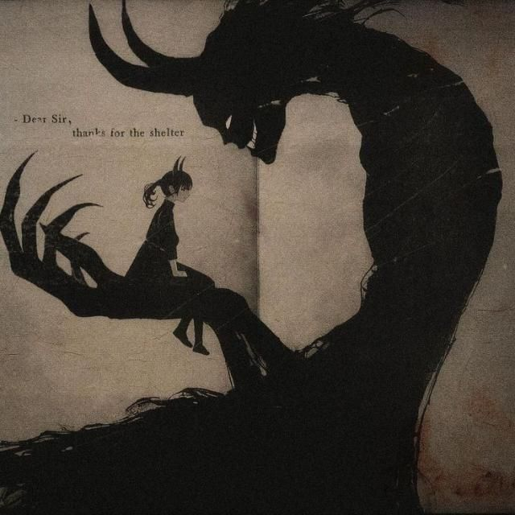

Critique : In the moody, hypnotic atmosphere of a late-night sanctuary, this artwork pulses with an irresistible, low-fi magnetism.
The dark-haired figure leans forward slightly, her hands gently pressing a pair of glowing headphones against her ears as if locking out the entirety of the external universe.
Her face is partially obscured by a dark mask, leaving only her piercing, golden-tinged eyes visible—eyes that stare forward with an intense, quiet focus that pierces through the surrounding shadows.
A gentle sheen of sweat on her collarbone and the soft rise and fall of her shoulders suggest a workout or a passionate surrender to the music.
Intricate, sprawling tattoos sweep across her shoulders, chest, and arms like permanent, dark melodies etched directly into her skin. Her crop top features a striking skull graphic flanked by stylized wings, emphasizing a gritty, street-style aesthetic that feels both rebellious and meticulously curated.
The color scheme is dominated by cool, murky tones—deep teals, slate grays, and shadows—punctuated by the subtle, neon glimmers along the headband of her audio gear.
The lighting is soft and directional, highlighting the contours of her body while leaving the background enveloped in mysterious, velvety darkness.
Praise: This piece perfectly captures that sacred, solitary hour when the world goes quiet and music becomes a living, breathing armor.
It speaks to the experience of finding oneself within a wall of sound, using rhythms and basslines to construct a fortress where no one else can enter.
The line work is sharp yet fluid, giving the image a modern, cinematic quality that feels like a still taken from a high-budget cyberpunk film.
It is a compelling celebration of focus, privacy, and the raw, transformative power of sound.
The darkness that surrounds her does not feel ominous; instead, it serves as a velvet backdrop that accentuates her quiet intensity.
Every detail, from the delicate ink patterns adorning her stomach to the subtle gleam of light reflecting off her mask, contributes to an air of enigmatic confidence.
The headphones act as a bridge between her inner thoughts and an endless stream of rhythm, tuning out the noise of urban life in favor of a private symphony.
The portrait is a masterwork of modern subculture art, capturing the fierce independence of those who walk through the night wrapped in their own personal soundtrack.
There is a tactile quality to the shadow and light playing across her skin, creating an atmosphere that feels heavy with bass and quiet introspection.
Her pose communicates a deliberate retreating inward, a conscious decision to pause the external world in order to re-center her spirit.
The dark face mask adds an aura of urban anonymity, allowing her to move through the shadows on her own terms.
It is a captivating anthem for nocturnal souls, those night owls who find their true energy, creativity, and clarity long after the rest of the world has gone to sleep.
Rating: 8.4 / 10